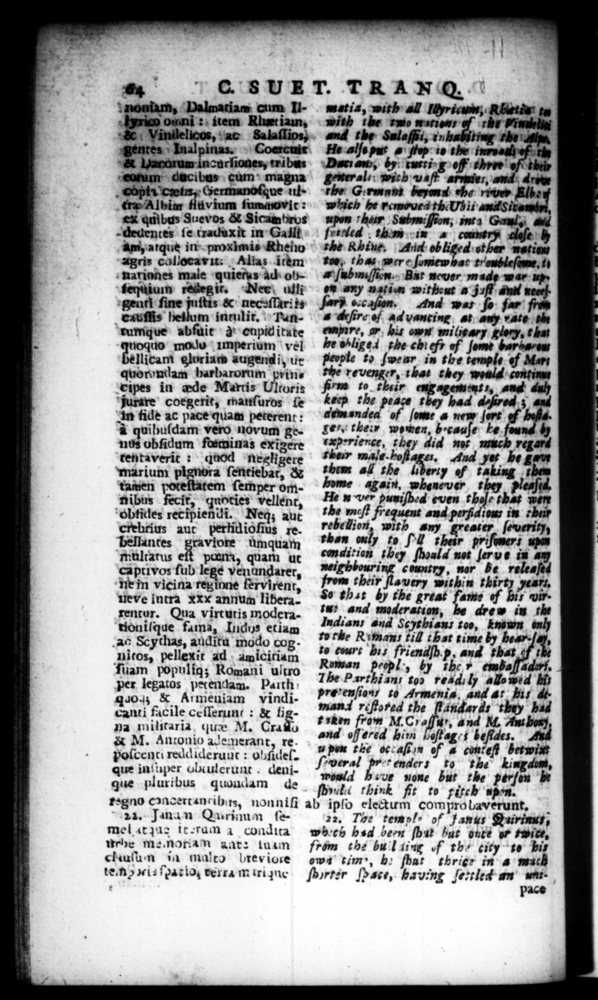

14 {1 „ S. 8 UE T. TRANQ.-' nmonſam, Dalwatiam cum Il- matia, with all Ityricunt; REeths ta 0 ohm: item Rhatiam, with the o mien, of ri Fimdeliai | 4 Vindlelicos, ac Salaſſios, and the Salaſfsi, 2 ting the Hip, 1 Sentes Inalpinas. Coercuir He alſe nn 4 flop 10 the ima ef the & Vacorumincarliones, tribus Dar: arts, by rurtt- g off theee' of this | _—_— — cum — —.— with wa 1 4 opt Germanoſque 1} he Grin beyond ehe river Elbe | . —— eG ex LeVos 1Cam hr 7 '$ Non, nta aid — ſe traduxit in Galt Fred . thim in | © am, atque in proxlmie Rheiio e Rhine. Avid ob Liged: of "agris coliocavit: Alias item - nariones male quiems ad oh'fequiumy recegir. Ner ulli geuti ſine juſtis & necaſſari is enuſſis hellum intulit. Tantumque abſuit ꝙ capitlitate — modo Imperium vel Ilicam gloriam àugendi, ut quorondam barbarorum prins capes in ade Martis Ultoris | jurare coegerit, mauſuros fe Keep the peace t im fide ac pace quam peterent: mp0 nd ſeme @ new | d quibuſdam vero novum ge- Les their women, b. cauſe nos obſidum fteminas exigere rience, tt tentaverit: quod negligere their male. ho marium pignora ſentiebat, & tamen pot ſemper om- home 74. nibus fecit, quoties vellent, hoſe thas were Obticles rec ipien di. Neg; aut crebrius aut pertid ioſius re. _—_— 1 umquam iſomer s upon multatus pan, quam ut in ay captivos ſub lege Ne gbbourine country, n t releaſed ne in vicina regions fervirent, their lavery within Fhirty nents weve intra xxx annum libera, $9 #942 by the great fame of bis witrencur. Qua virtutis modera- and moderation, drew in the tioniſque fama, Indys etiam — * and Scythians too, known only a0 Scythas, auditu modo cop- ro fe Rimmans till that time by hear- 4 nitos, pellexit ad amiciciam to cours bis fr ienaſb p, and that . ſuam populig; Romani ultro _—_—_ , by ther embaſſadot per legatos petendam. Path 7 2 arthians tos readily allowid bi don & Armeuiam vindi- prevenſion/ te Armenis, and ar Hit , canti facile ccilerunt : & bg- —_ Graf and 6 they 2 na militarta, quæ M. Craſſo and offered. bivi Haftag ! beſides. ** & M. Antonio ademerant, re. W. poſcenci reddideruut: ohfidel. EI the oc ca of 4 conteſt berwim a : -weral fr-* enders to the kingdom, que inſuper ubiulerunt . deni- Jon 2 none but the | | | eren be gue pluribus _ quoucam de ng». think fit to riteb R 6 | regno cancertancibirs, nonnifi ab ipſo eletum comprobaverunt, 2 w cg RI . A . VE Ä ,. , , , — — — — - as 22. Jinan Qurinum ſe— 22, The templ- of Janus Quirinuy, mel at qus tr-ram à condira web hed been ſhut but oute of ite, urhe me, hortan ant: lum from the bu'l ting of the city te bis chulun in malto brevicoe ewe tim", be fbat thrigr in a mach ten i; fparioy verra miri que ſhyrter Pace, having ſertled an m. | pace — —— 29” 2” —— - — 9 0 „4 ans = - 4 4 oy »* * - - — . — » — or wc $4 _ —— o * Ka 9 "- hy = -2» — n = Fm nen as Fry
